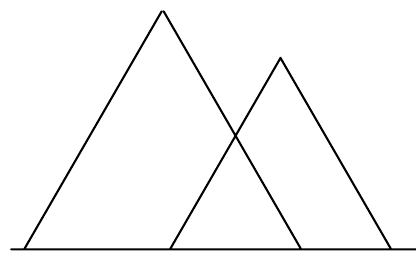
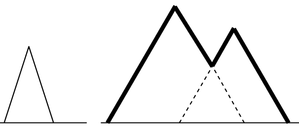

ICPC World Finals 2008 · Problem J
The city of Banff hired an advertising agency to promote the city’s attractions to potential visitors. One of the planned slogans stated that the mountain ranges around the city form the most beautiful skyline in Canada. But the Institute for Consumer Protection in Canada (ICPC) decided that “the most beautiful skyline” was a subjective and unverifiable claim, and could therefore be considered misleading.
The advertising agency then came up with the slogan “Banff – the longest skyline in Canada.” Although not as catchy, it is hopefully verifiable, and therefore admissible under Canada’s tricky advertising laws.
This is where you come in. What the advertising agency needs is a program that determines the length of a skyline. Consider each mountain as a two-dimensional triangle having two upper sides the same length. A skyline is the outline of one or more mountains. The skyline’s length is the total length of the outline. The left illustration below shows three mountains. The right illustration shows (with bold lines) the skyline and (with dashed lines) the portion of the mountains’ upper edges that are not part of the skyline. Note that parts of the horizon line that lie between mountains are not considered part of the skyline.


Each input file contains one or more test cases, which are descriptions of mountain ranges. Each description starts with a line containing a positive integer N, which specifies the number of mountains in the range. Each of the next N lines describes a mountain with three integers X, H, and B, which specify the horizontal position of the mountain’s peak relative to some fixed point, the height of the peak, and the width of the base of the mountain, respectively. The base of each mountain coincides with a horizontal line. The values satisfy the conditions N ≤ 100, H > 0, and B > 0.
The last test case is followed by a line containing a zero.
For each test case, print the case number (beginning with 1) and the length of the skyline. Print the length rounded to the nearest integer, with 0.5 rounded up. Print a blank line after the output of each test case. Use the format shown in the sample output below.
1 100 50 100 3 20 30 35 37 24 29 60 20 13 0
Case 1: 141 Case 2: 138